<title>YBAVIT Redesign Prompts</title>
<style>
  /* Each section of the YBAVIT deck: its screenshot beside a short prompt for an image model. Dark only, like the deck. */
  :root { color-scheme: dark; --bg: #07090d; --surface: #0e1218; --line: rgb(236 230 218 / .14); --text: #ece6da; --text-2: rgb(236 230 218 / .72); --accent: #f2b35b; --ink: #1a1206;
    --font: 'Archivo', 'Helvetica Neue', Arial, sans-serif; --mono: 'IBM Plex Mono', ui-monospace, Menlo, monospace; }
  body { background: var(--bg); color: var(--text); font-family: var(--font); font-size: 16px; line-height: 1.55; }
  main { max-width: 84rem; margin: 0 auto; padding-block: 2.5rem 5rem; padding-inline: 16px; display: grid; gap: 2.5rem; }
  header { display: grid; gap: .75rem; max-width: 62ch; }
  h1 { margin: 0; font-size: clamp(2rem, 1.4rem + 2.6vw, 3.5rem); line-height: 1; letter-spacing: -.025em; font-weight: 600; font-stretch: 108%; text-wrap: balance; }
  header p { margin: 0; color: var(--text-2); }
  .mono { font-family: var(--mono); font-size: .8125rem; letter-spacing: .02em; }
  .eyebrow { color: var(--accent); text-transform: uppercase; letter-spacing: .08em; }
  .shot { display: grid; gap: 1rem 2rem; align-items: start; padding-top: 2rem; border-top: 1px solid var(--line); }
  .shot img { width: 100%; height: auto; border: 1px solid var(--line); border-radius: 2px; display: block; }
  .meta { display: grid; gap: .75rem; min-width: 0; }
  .meta h2 { margin: 0; font-size: 1.375rem; font-weight: 580; display: flex; gap: .75rem; align-items: baseline; }
  .meta h2 .mono { color: var(--accent); }
  .prompt { margin: 0; padding: 1rem; background: var(--surface); border: 1px solid var(--line); border-radius: 2px; color: var(--text); }
  .row { display: flex; gap: .75rem; align-items: center; flex-wrap: wrap; }
  button { font: 500 .8125rem var(--mono); min-height: 40px; padding: 0 1rem; border-radius: 2px; border: 0; background: var(--accent); color: var(--ink); cursor: pointer; }
  button:focus-visible { outline: 2px solid var(--accent); outline-offset: 3px; }
  .file { color: var(--text-2); }
  @media (min-width: 64rem) { .shot { grid-template-columns: minmax(0, 1.5fr) minmax(0, 1fr); } }
</style>
<link rel="stylesheet" href="https://fonts.googleapis.com/css2?family=Archivo:wdth,wght@62..125,400..700&family=IBM+Plex+Mono:wght@400;500&display=swap">
<main>
  <header>
    <p class="mono eyebrow">YBAVIT venue walkthrough · 24 sections</p>
    <h1>Every section, with a prompt for the redesign.</h1>
    <p>Each screenshot is the deck as a client sees it (1440 × 900, Client view). The prompt beside it says only what is on screen, so you can attach the image and the prompt to an image model and ask for a better layout.</p>
  </header>
  
  <section class="shot" id="s1">
    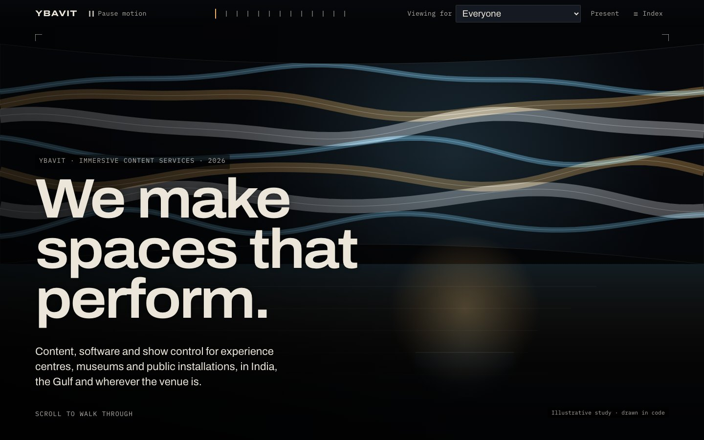
    <div class="meta">
      <h2><span class="mono">01</span> Cover</h2>
      <p class="prompt" id="p1">Full-screen dark website hero for an immersive content studio called YBAVIT: a curved LED wall of flowing amber, blue and white light ribbons glows over a reflective floor. Lower left sits a small mono eyebrow, a huge bone-white headline &quot;We make spaces that perform.&quot;, a short subhead and a &quot;Scroll to walk through&quot; cue. A thin top bar holds the wordmark, Pause motion, a row of chapter ticks, a &quot;Viewing for&quot; dropdown, Present and Index.</p>
      <div class="row"><button type="button" data-copy="p1">Copy prompt</button><span class="mono file">01-cover.jpg</span></div>
    </div>
  </section>
  <section class="shot" id="s2">
    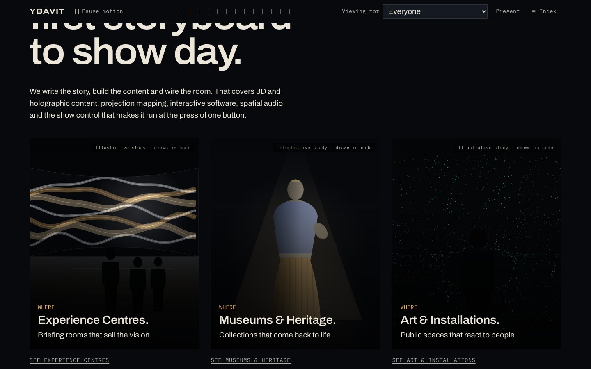
    <div class="meta">
      <h2><span class="mono">02</span> 01 Promise</h2>
      <p class="prompt" id="p2">Dark website section ending a large headline &quot;Ten disciplines, one team, from first storyboard to show day.&quot; with a short paragraph, above three tall 4:5 cards side by side. Each card shows a moody venue scene (a light-ribbon wall with silhouettes, a spotlit statue, a dark room of tiny teal particles) with a small amber label, a title (Experience Centres / Museums &amp; Heritage / Art &amp; Installations) and one line, with a &quot;See chapter&quot; link under each.</p>
      <div class="row"><button type="button" data-copy="p2">Copy prompt</button><span class="mono file">02-promise.jpg</span></div>
    </div>
  </section>
  <section class="shot" id="s3">
    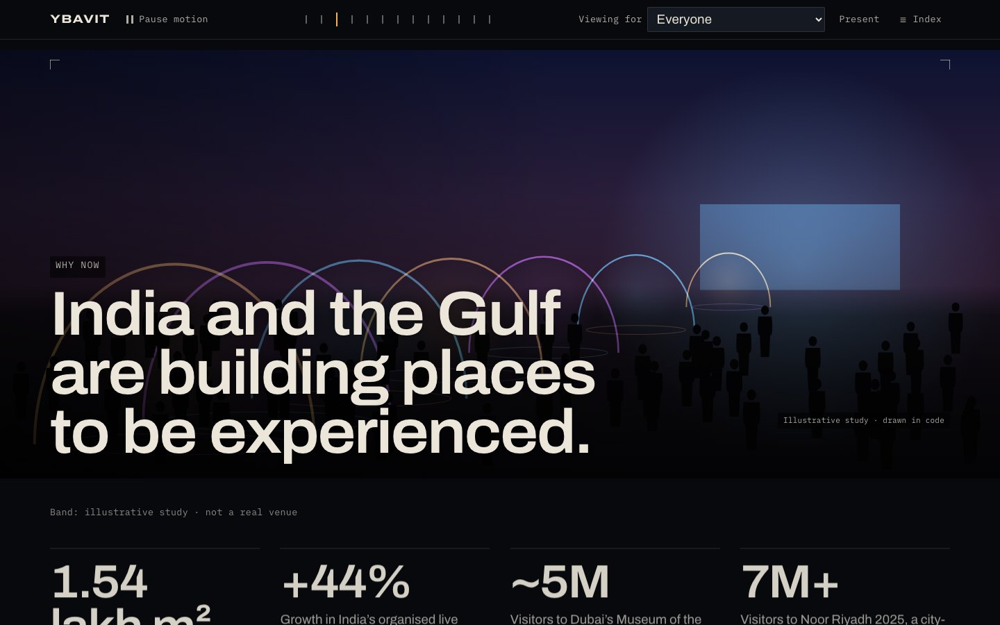
    <div class="meta">
      <h2><span class="mono">03</span> 02 Why now: film band</h2>
      <p class="prompt" id="p3">Wide cinematic 21:9 banner of a dusk outdoor light festival: glowing coloured arches, crowds in silhouette and a lit facade in the distance. Over its lower left sit a mono eyebrow &quot;Why now&quot; and the large headline &quot;India and the Gulf are building places to be experienced.&quot;, with the top of four big statistics just below the banner.</p>
      <div class="row"><button type="button" data-copy="p3">Copy prompt</button><span class="mono file">03-why-now-band.jpg</span></div>
    </div>
  </section>
  <section class="shot" id="s4">
    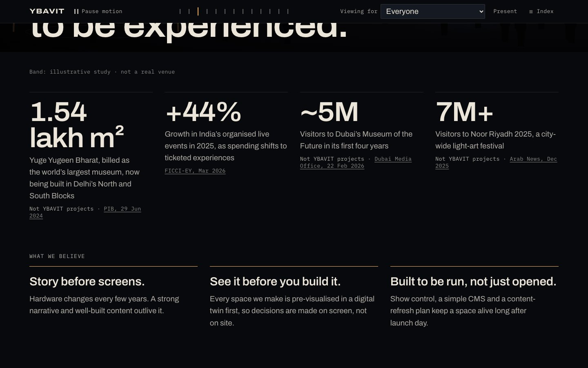
    <div class="meta">
      <h2><span class="mono">04</span> 02 Why now: figures and beliefs</h2>
      <p class="prompt" id="p4">Dark section with four market figures in a row (1.54 lakh m², +44%, ~5M, 7M+), each with a one-line label and a small mono source link marked &quot;Not YBAVIT projects&quot;. Below, under &quot;What we believe&quot;, three text columns with amber top rules: Story before screens, See it before you build it, Built to be run, not just opened.</p>
      <div class="row"><button type="button" data-copy="p4">Copy prompt</button><span class="mono file">04-why-now-figures.jpg</span></div>
    </div>
  </section>
  <section class="shot" id="s5">
    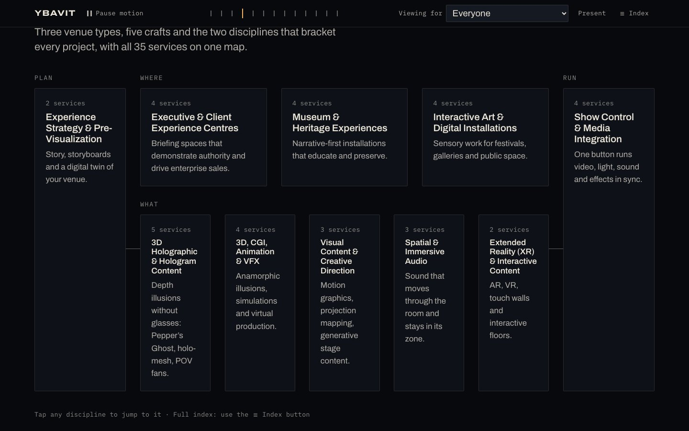
    <div class="meta">
      <h2><span class="mono">05</span> 03 Offer map</h2>
      <p class="prompt" id="p5">One-screen service map on a dark background: a tall PLAN card on the left, a tall RUN card on the right, and between them a WHERE row of three cards above a WHAT row of five narrow cards, joined by thin hairline arrows. Each card shows a small service count, a bold discipline name and a one-line description.</p>
      <div class="row"><button type="button" data-copy="p5">Copy prompt</button><span class="mono file">05-offer-map.jpg</span></div>
    </div>
  </section>
  <section class="shot" id="s6">
    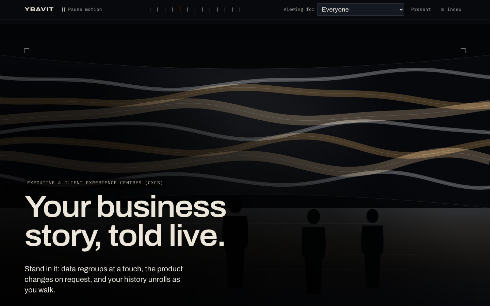
    <div class="meta">
      <h2><span class="mono">06</span> 04 Experience Centres: opener</h2>
      <p class="prompt" id="p6">Full-screen chapter opener: a dark executive briefing room with a floor-to-ceiling wraparound LED wall of white and amber light ribbons and three standing silhouettes. Lower left: mono eyebrow &quot;Executive &amp; Client Experience Centres (CXCs)&quot;, the large headline &quot;Your business story, told live.&quot; and a two-line subhead.</p>
      <div class="row"><button type="button" data-copy="p6">Copy prompt</button><span class="mono file">06-cxc-opener.jpg</span></div>
    </div>
  </section>
  <section class="shot" id="s7">
    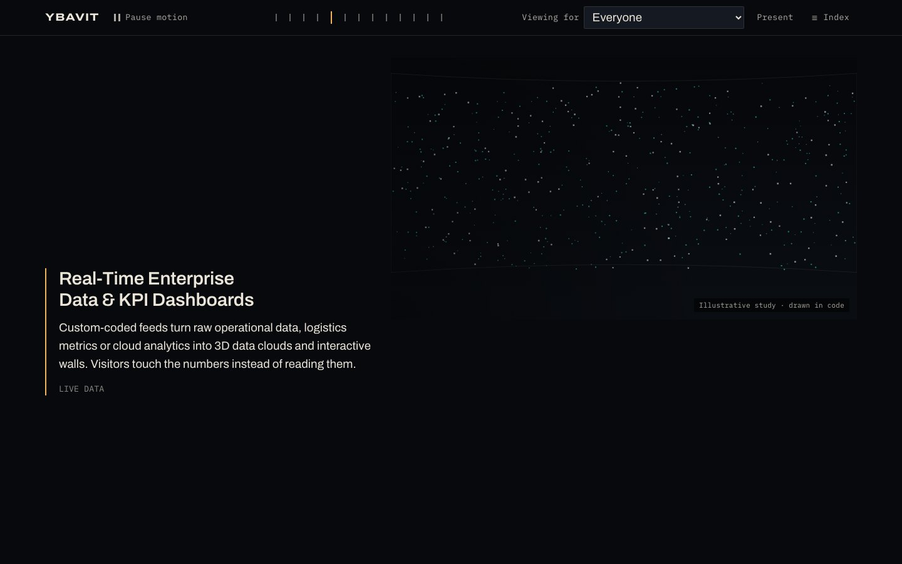
    <div class="meta">
      <h2><span class="mono">07</span> 04 Experience Centres: service step</h2>
      <p class="prompt" id="p7">Scrollytelling step: on the left a text block with an amber left rule, the title &quot;Real-Time Enterprise Data &amp; KPI Dashboards&quot;, a paragraph and a mono &quot;LIVE DATA&quot; tag. On the right a sticky 16:9 frame shows a teal-and-white point cloud on a curved dark wall, with a small label bottom-right.</p>
      <div class="row"><button type="button" data-copy="p7">Copy prompt</button><span class="mono file">07-cxc-step.jpg</span></div>
    </div>
  </section>
  <section class="shot" id="s8">
    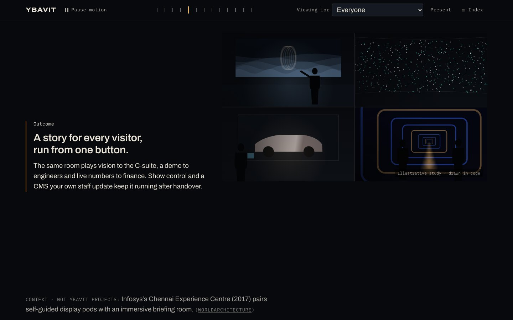
    <div class="meta">
      <h2><span class="mono">08</span> 04 Experience Centres: outcome</h2>
      <p class="prompt" id="p8">Outcome step: a left text block &quot;A story for every visitor, run from one button.&quot; with a paragraph. On the right a 2×2 mosaic of the four earlier scenes (a presenter at an LED stage, a point cloud, a car on a display, an LED tunnel); a small mono context line with a source sits underneath.</p>
      <div class="row"><button type="button" data-copy="p8">Copy prompt</button><span class="mono file">08-cxc-outcome.jpg</span></div>
    </div>
  </section>
  <section class="shot" id="s9">
    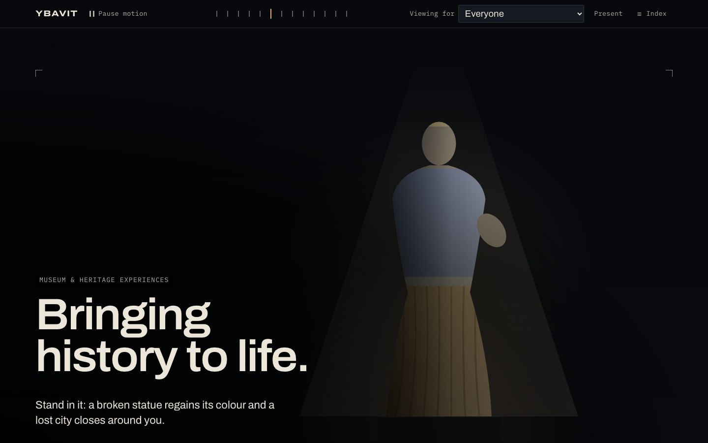
    <div class="meta">
      <h2><span class="mono">09</span> 05 Museums &amp; Heritage: opener</h2>
      <p class="prompt" id="p9">Full-screen museum chapter opener: a night gallery with one spotlight on a draped stone statue whose garment glows lapis blue and ochre, set right of centre. Lower left: mono eyebrow &quot;Museum &amp; Heritage Experiences&quot;, the large headline &quot;Bringing history to life.&quot; and a subhead.</p>
      <div class="row"><button type="button" data-copy="p9">Copy prompt</button><span class="mono file">09-museums-opener.jpg</span></div>
    </div>
  </section>
  <section class="shot" id="s10">
    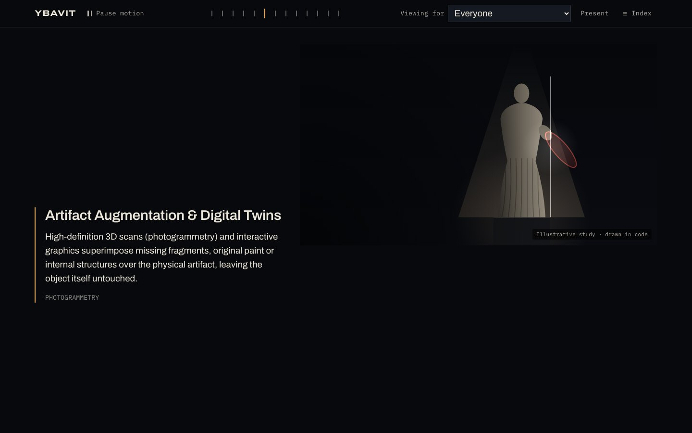
    <div class="meta">
      <h2><span class="mono">10</span> 05 Museums &amp; Heritage: service step</h2>
      <p class="prompt" id="p10">Scrollytelling step: left text with an amber rule, title &quot;Artifact Augmentation &amp; Digital Twins&quot;, a paragraph and a &quot;PHOTOGRAMMETRY&quot; tag. On the right a sticky 16:9 frame of a spotlit stone statue with a white scan line sweeping across it and a red outline restoring its missing arm.</p>
      <div class="row"><button type="button" data-copy="p10">Copy prompt</button><span class="mono file">10-museums-step.jpg</span></div>
    </div>
  </section>
  <section class="shot" id="s11">
    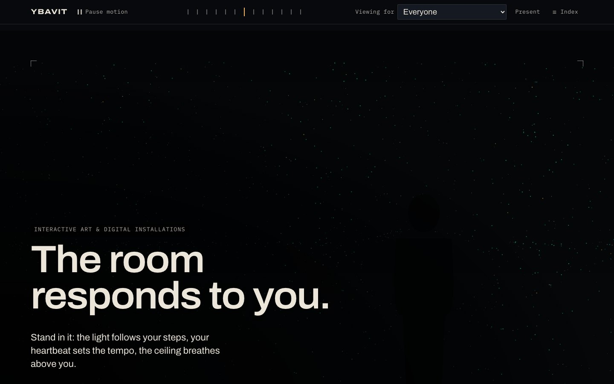
    <div class="meta">
      <h2><span class="mono">11</span> 06 Art &amp; Installations: opener</h2>
      <p class="prompt" id="p11">Full-screen opener for interactive art: an almost black room filled with a faint teal-and-amber particle field and one dark silhouette walking through it. Lower left: mono eyebrow &quot;Interactive Art &amp; Digital Installations&quot;, the large headline &quot;The room responds to you.&quot; and a subhead.</p>
      <div class="row"><button type="button" data-copy="p11">Copy prompt</button><span class="mono file">11-installations-opener.jpg</span></div>
    </div>
  </section>
  <section class="shot" id="s12">
    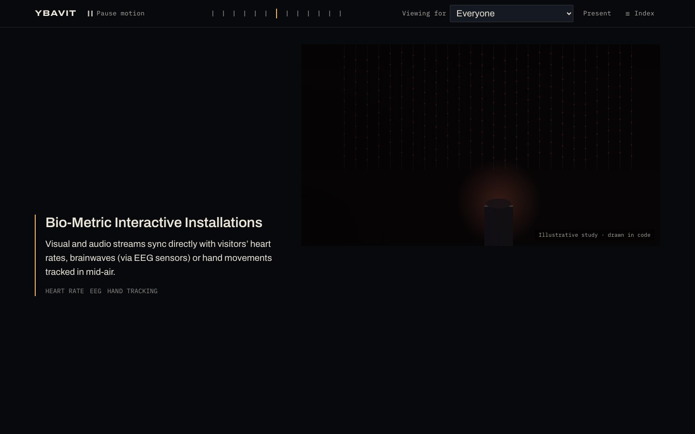
    <div class="meta">
      <h2><span class="mono">12</span> 06 Art &amp; Installations: service step</h2>
      <p class="prompt" id="p12">Scrollytelling step: left text with an amber rule, title &quot;Bio-Metric Interactive Installations&quot;, a paragraph and tags &quot;HEART RATE · EEG · HAND TRACKING&quot;. On the right a sticky 16:9 dark frame where hanging strands of red LED points pulse around a glowing sensor pedestal.</p>
      <div class="row"><button type="button" data-copy="p12">Copy prompt</button><span class="mono file">12-installations-step.jpg</span></div>
    </div>
  </section>
  <section class="shot" id="s13">
    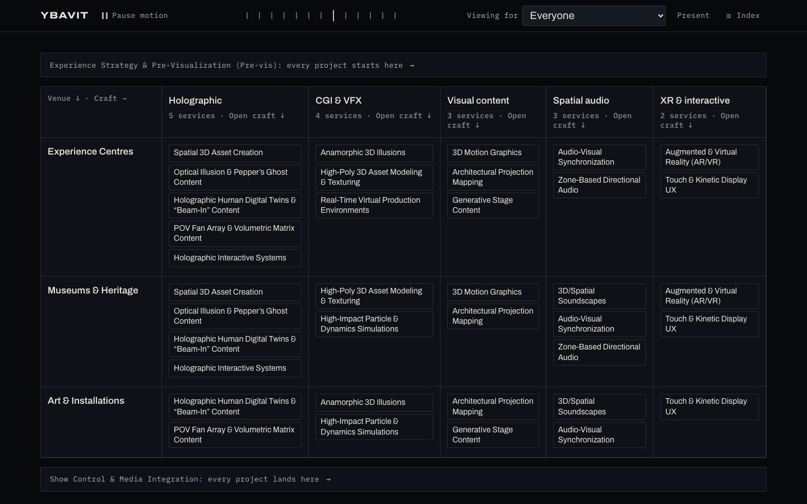
    <div class="meta">
      <h2><span class="mono">13</span> 07 Craft explorer: matrix</h2>
      <p class="prompt" id="p13">Dark data table under the end of a headline &quot;every venue.&quot; and the subhead &quot;Five crafts, seventeen services.&quot; Rows are three venues (Experience Centres, Museums &amp; Heritage, Art &amp; Installations), columns are five crafts (Holographic, CGI &amp; VFX, Visual content, Spatial audio, XR &amp; interactive), and each cell lists the service names as small outlined links. Thin banner rows above and below point to Pre-vis and Show Control.</p>
      <div class="row"><button type="button" data-copy="p13">Copy prompt</button><span class="mono file">13-craft-matrix.jpg</span></div>
    </div>
  </section>
  <section class="shot" id="s14">
    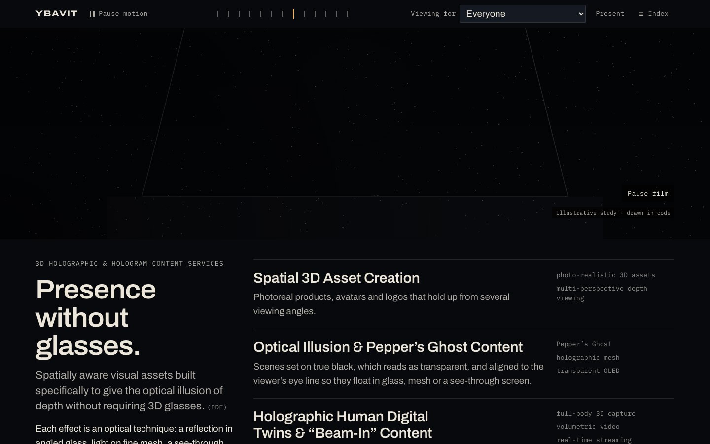
    <div class="meta">
      <h2><span class="mono">14</span> 07a Holographic panel</h2>
      <p class="prompt" id="p14">Craft panel: a wide film band on top shows an empty dark stage behind a faint angled glass pane, with a &quot;Pause film&quot; button. Below, the left column holds a mono eyebrow, the large headline &quot;Presence without glasses.&quot;, a grey subhead and body; the right column is a ruled list of services with bold names, descriptions and mono technique tags.</p>
      <div class="row"><button type="button" data-copy="p14">Copy prompt</button><span class="mono file">14-craft-holographic.jpg</span></div>
    </div>
  </section>
  <section class="shot" id="s15">
    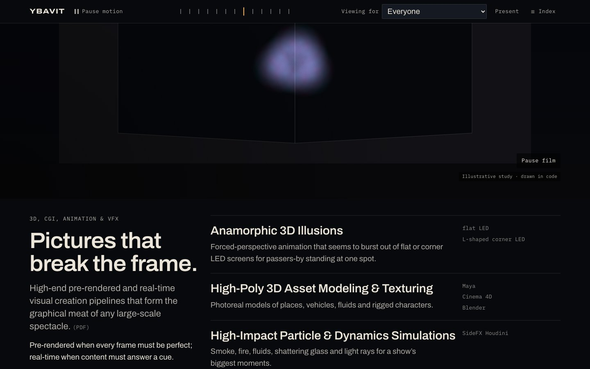
    <div class="meta">
      <h2><span class="mono">15</span> 07b CGI &amp; VFX panel</h2>
      <p class="prompt" id="p15">Craft panel: a wide film band of a dark L-shaped corner LED screen on a building with a blurred blue-violet form bursting from the corner, plus a &quot;Pause film&quot; button. Below, the headline &quot;Pictures that break the frame.&quot; with a grey subhead on the left and a ruled services list (Anamorphic 3D Illusions, High-Poly 3D Asset Modeling &amp; Texturing, High-Impact Particle &amp; Dynamics Simulations) with tool tags (Maya, Cinema 4D, Blender) on the right.</p>
      <div class="row"><button type="button" data-copy="p15">Copy prompt</button><span class="mono file">15-craft-cgi.jpg</span></div>
    </div>
  </section>
  <section class="shot" id="s16">
    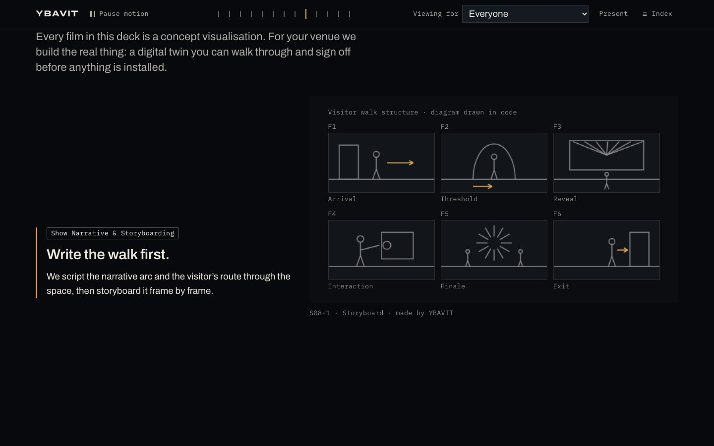
    <div class="meta">
      <h2><span class="mono">16</span> 08 Pre-vis: storyboard</h2>
      <p class="prompt" id="p16">Pre-vis chapter step: on the left a chip &quot;Show Narrative &amp; Storyboarding&quot;, the title &quot;Write the walk first.&quot; and a short paragraph with an amber left rule. On the right a frame holding a 3×2 grid of simple grey line-drawn storyboard panels (Arrival, Threshold, Reveal, Interaction, Finale, Exit) with amber movement arrows and a mono caption.</p>
      <div class="row"><button type="button" data-copy="p16">Copy prompt</button><span class="mono file">16-previs-storyboard.jpg</span></div>
    </div>
  </section>
  <section class="shot" id="s17">
    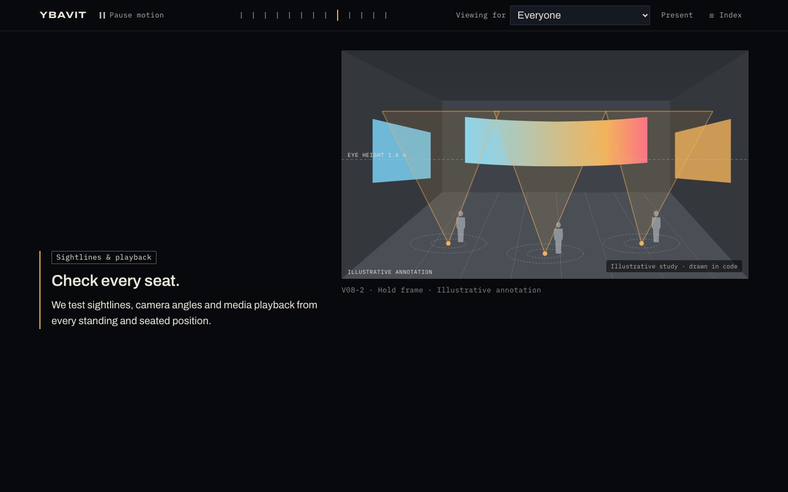
    <div class="meta">
      <h2><span class="mono">17</span> 08 Pre-vis: sightlines</h2>
      <p class="prompt" id="p17">Step &quot;Check every seat.&quot; with the chip &quot;Sightlines &amp; playback&quot; on the left. On the right a grey-box 3D hall with a curved gradient LED wall and two side screens, three grey mannequins, translucent amber sightline cones, dashed distance rings and an &quot;EYE HEIGHT 1.6 m&quot; line, captioned &quot;Illustrative annotation&quot;.</p>
      <div class="row"><button type="button" data-copy="p17">Copy prompt</button><span class="mono file">17-previs-sightlines.jpg</span></div>
    </div>
  </section>
  <section class="shot" id="s18">
    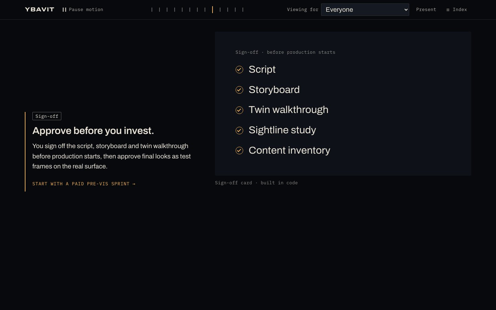
    <div class="meta">
      <h2><span class="mono">18</span> 08 Pre-vis: sign-off</h2>
      <p class="prompt" id="p18">Step &quot;Approve before you invest.&quot; with the chip &quot;Sign-off&quot;, a paragraph and an amber link &quot;Start with a paid pre-vis sprint →&quot;. On the right a dark card titled &quot;Sign-off · before production starts&quot; lists five items with amber check circles: Script, Storyboard, Twin walkthrough, Sightline study, Content inventory.</p>
      <div class="row"><button type="button" data-copy="p18">Copy prompt</button><span class="mono file">18-previs-signoff.jpg</span></div>
    </div>
  </section>
  <section class="shot" id="s19">
    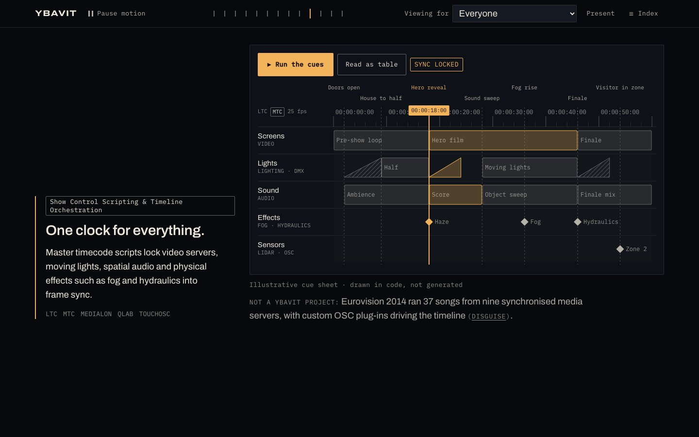
    <div class="meta">
      <h2><span class="mono">19</span> 09 Show control: cue timeline</h2>
      <p class="prompt" id="p19">Show-control step: left text &quot;One clock for everything.&quot; with the chip &quot;Show Control Scripting &amp; Timeline Orchestration&quot; and tags (LTC, MTC, MEDIALON, QLAB, TOUCHOSC). On the right a dark cue-timeline panel with an amber &quot;Run the cues&quot; button, &quot;Read as table&quot;, a &quot;SYNC LOCKED&quot; chip, a timecode ruler, named cue markers (Doors open, Hero reveal, Finale) and five lanes (Screens, Lights, Sound, Effects, Sensors) of grey blocks, hatched fades and diamonds, crossed by an amber playhead.</p>
      <div class="row"><button type="button" data-copy="p19">Copy prompt</button><span class="mono file">19-show-control-timeline.jpg</span></div>
    </div>
  </section>
  <section class="shot" id="s20">
    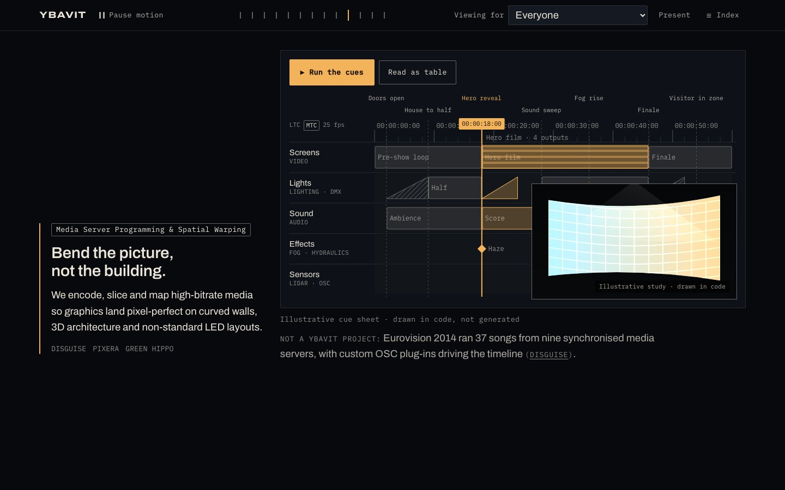
    <div class="meta">
      <h2><span class="mono">20</span> 09 Show control: warp</h2>
      <p class="prompt" id="p20">The same cue timeline on the step &quot;Bend the picture, not the building.&quot;: the video lane is split into four amber output slices, and an inset in the lower right shows a projected calibration grid bending onto a curved white wall.</p>
      <div class="row"><button type="button" data-copy="p20">Copy prompt</button><span class="mono file">20-show-control-warp.jpg</span></div>
    </div>
  </section>
  <section class="shot" id="s21">
    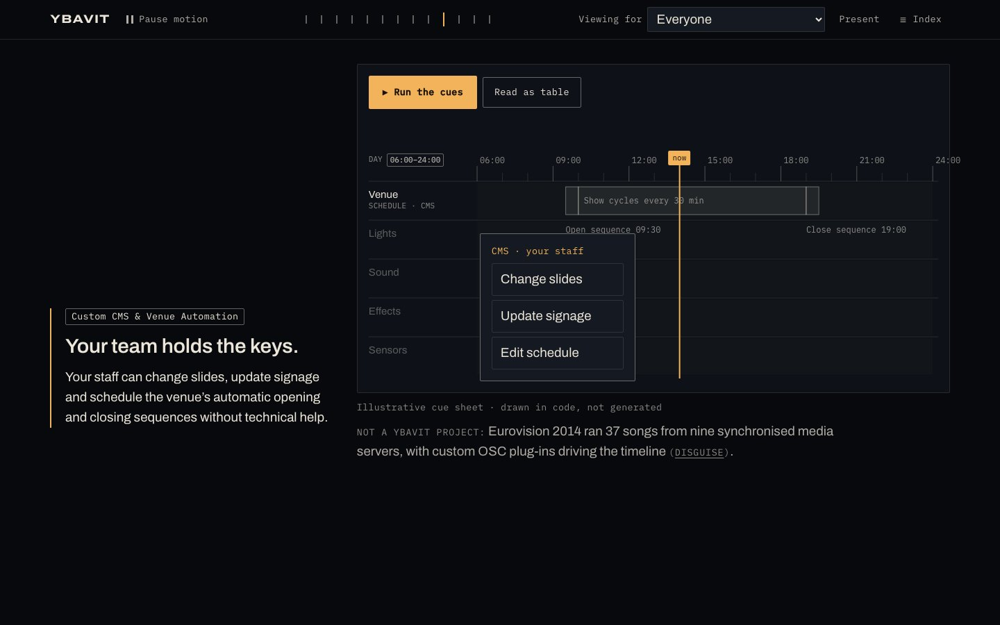
    <div class="meta">
      <h2><span class="mono">21</span> 09 Show control: venue day</h2>
      <p class="prompt" id="p21">The timeline rescaled to a full day (06:00–24:00): one &quot;Venue&quot; lane with &quot;Open sequence 09:30&quot;, a long &quot;Show cycles every 30 min&quot; block and &quot;Close sequence 19:00&quot;, an amber &quot;now&quot; marker, and a small CMS card with the buttons Change slides, Update signage, Edit schedule. Left text: &quot;Your team holds the keys.&quot;</p>
      <div class="row"><button type="button" data-copy="p21">Copy prompt</button><span class="mono file">21-show-control-day.jpg</span></div>
    </div>
  </section>
  <section class="shot" id="s22">
    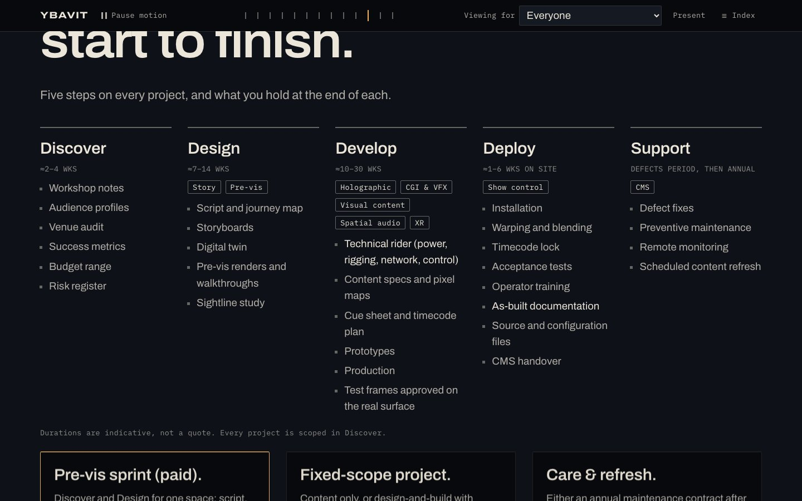
    <div class="meta">
      <h2><span class="mono">22</span> 10 How we work together</h2>
      <p class="prompt" id="p22">Process section on a slightly lighter dark background: the end of the headline &quot;start to finish.&quot; and a five-column phase strip (Discover, Design, Develop, Deploy, Support), each with a mono duration, small discipline chips (Story, Pre-vis, Holographic, Show control) and a bullet list of deliverables. The top of three engagement cards begins below, the first outlined in amber.</p>
      <div class="row"><button type="button" data-copy="p22">Copy prompt</button><span class="mono file">22-process.jpg</span></div>
    </div>
  </section>
  <section class="shot" id="s23">
    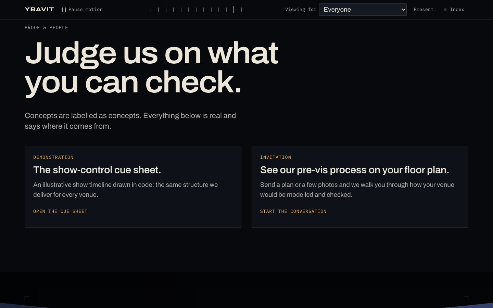
    <div class="meta">
      <h2><span class="mono">23</span> 11 Proof &amp; people</h2>
      <p class="prompt" id="p23">Proof section: the large headline &quot;Judge us on what you can check.&quot; and a grey subhead, then two outlined cards side by side, &quot;Demonstration · The show-control cue sheet.&quot; and &quot;Invitation · See our pre-vis process on your floor plan.&quot;, each with a paragraph and an amber uppercase link.</p>
      <div class="row"><button type="button" data-copy="p23">Copy prompt</button><span class="mono file">23-proof.jpg</span></div>
    </div>
  </section>
  <section class="shot" id="s24">
    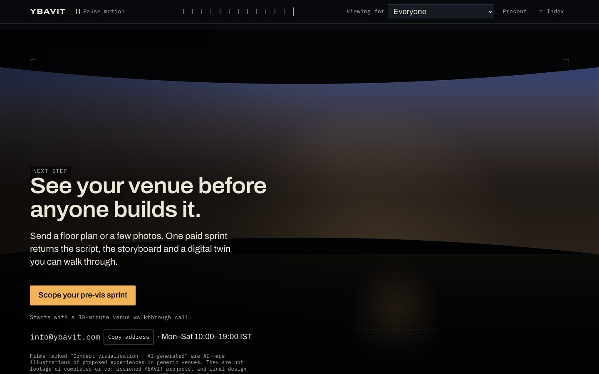
    <div class="meta">
      <h2><span class="mono">24</span> 12 Next step</h2>
      <p class="prompt" id="p24">Closing full-screen section: a dim dusk-blue curved LED wall over a dark floor. Lower left: eyebrow &quot;Next step&quot;, the headline &quot;See your venue before anyone builds it.&quot;, a subhead, an amber &quot;Scope your pre-vis sprint&quot; button, the email info@ybavit.com with a &quot;Copy address&quot; button, office hours, and a small mono disclosure about AI concept films.</p>
      <div class="row"><button type="button" data-copy="p24">Copy prompt</button><span class="mono file">24-next-step.jpg</span></div>
    </div>
  </section>
</main>
<script>
  document.querySelectorAll('[data-copy]').forEach(b => b.addEventListener('click', async () => {
    const el = document.getElementById(b.dataset.copy);
    try { await navigator.clipboard.writeText(el.textContent); b.textContent = 'Copied'; }
    catch { const r = document.createRange(); r.selectNodeContents(el); const s = getSelection(); s.removeAllRanges(); s.addRange(r); b.textContent = 'Selected: press Cmd+C'; }
    setTimeout(() => { b.textContent = 'Copy prompt'; }, 2200);
  }));
</script>
